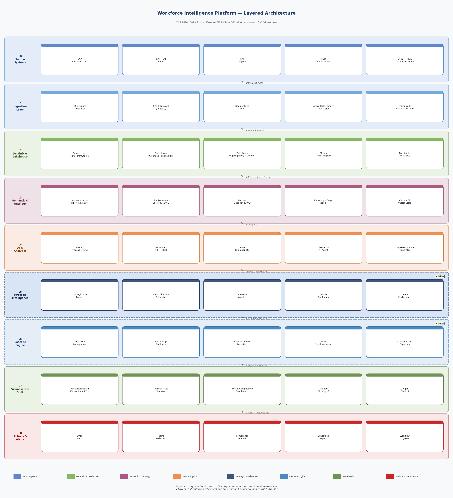

Prompt Library (280)
Scope
Workforce Intelligence Platform — ready.
I analyse all 274 sample employees across 12 functions, 9 programmes, and 3 portfolios representing 54,500 FTEs.
Select a scope and prompt from the library, or type any question. I answer for the selected function or programme — or enterprise-wide if no scope is set.
Portfolio Overview
3 portfolios · 9 programmes · 12 functions · 54,500 FTEs
Programme Risk Map
Enterprise KPIs
ROAD Framework Health
Functions × ROAD pillars — score 0–100 · Green ≥75 · Amber 55–74 · Red <55
ROAD Insights — Where to Focus
Temporal Analysis
Time in role · Time in level · Time on programme · Acquisition lifecycle experience
Time in Role Distribution
<1yr = Ramping · 1–3yr = Optimal · 3–5yr = Consider rotation · 5yr+ = Stale
Time in Level Distribution
<2yr = On track · 2–4yr = Promotion window · 4yr+ = Overdue — retention risk
Time on Programme Distribution
<1yr = New · 1–3yr = Building · 3–5yr = Deep knowledge · 5yr+ = Rotation risk
Acquisition Lifecycle Experience
Which phases has each function worked in? Red = no one with experience in current programme phase.
Individual Temporal Risk — Priority List
Resource Allocation Matrix
Functions supply resources to programmes — headcount required · % of function · flight risk · phase match
Action Plans
Generated from driving indicators · with return on impact
Prompt Library
280 prompts across 5 capability areas — click any to run in the AI Workspace
Platform Architecture
WIP-SRNA-001 v2.0 · Nine-layer stack · Phase 1: flat files · Phase 2: live SAP integration
Phase 1 — Active Now
Phase 2 — IT Integration

Run generate_diagram.py to generate architecture diagram'">